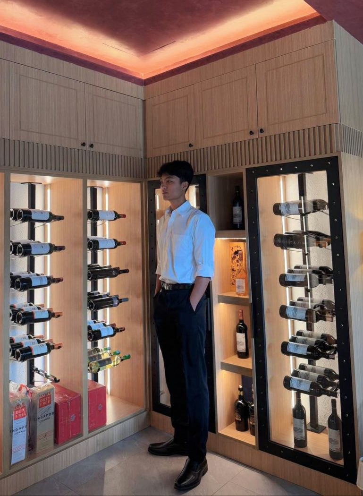

01 — BACKEND
Backend development
Building application logic and learning how services communicate through APIs.
I'm Myat Oo Thar, an aspiring software engineer focused on Java backend development. I enjoy understanding how systems work, solving problems, and turning ideas into practical applications.

Learning by building, improving through practice, and staying curious about technology.
I'm studying Computer Engineering / Information Technology at Yangon Technological University. My long-term goal is to become a capable software engineer who can design and build reliable applications.
My current focus is strengthening my backend foundations with Java, Spring Boot, REST APIs, and MySQL. I believe the best way to learn is to build real projects, understand the mistakes, and improve one step at a time.
I'm also interested in frontend and mobile development, and plan to explore Flutter as I grow my skills.
A growing toolkit. I keep learning and applying each technology through small exercises and projects.
Building application logic and learning how services communicate through APIs.
Working with relational data, SQL queries, and connecting applications to databases.
Learning the building blocks of web interfaces and how frontend code connects to backend services.
Exploring Dart and preparing to build cross-platform applications with Flutter.
Practicing version control, IDE workflows, debugging, and project collaboration.
Breaking problems into smaller steps, learning from errors, and improving through consistent practice.
A university team project that helped me practice Java, databases, and application development.
A desktop library-management application developed as a university group project. It helps a librarian manage books, members, borrowing, and returns for a physical library.
What I practiced: Java application structure, Swing UI, JDBC database connectivity, SQL operations, and collaborating on a shared codebase.
A work in progress. The goal is steady growth, strong fundamentals, and useful projects.
Deepening Java, Spring Boot, REST API design, and MySQL knowledge through practical projects.
Connect backend services with a frontend, improve testing, and learn deployment workflows.
Use Dart and Flutter to create mobile applications while continuing to grow as a backend developer.
I'd be happy to connect, learn, and build something meaningful.